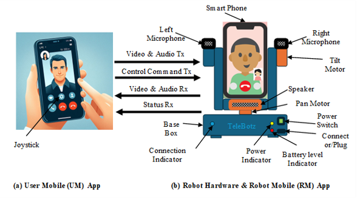
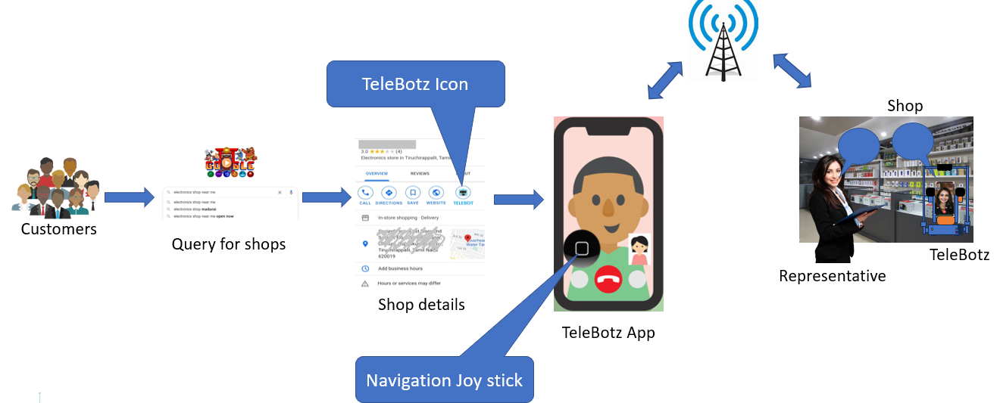

Welcome to TeleBotz!
Have you ever wished you could be present in two places at the same time—especially when both moments truly matter?
Many of us have faced such situations and, inevitably, had to compromise. But what if technology could redefine presence itself?
TeleBotz transforms this idea into reality by enabling meaningful remote presence—allowing you to see, interact, navigate, and connect as if you were physically there.
TeleBotz is a mobile augmented robotic technology to realise telepresence robot for remote interaction and navigation in public places.

